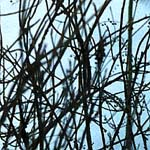
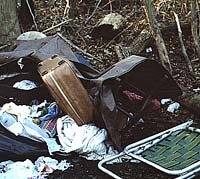
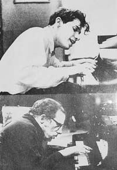

Saturday, January 17, 2004
Waystation

I like to imagine that this dark arch leads to a warm den. A hermit's cell. The cell where I've been these past three months. Cell, and hibernatorium. For I've spent a lot of time simply dormant, waiting, biding my time. Time's up, now. The chapter, "In Which I Break My Neck," is actually over. How strange. It was becoming familiar, comfortable terrain. I sit alone in a waystation/on a long railroad/waiting for a train -- when my dear father, Raul Stanati, returns from Florida I must ask him who wrote that song. The train, my life, has arrived and it's time to get back on.
That's a bad metaphor. This has never not been my life. What is, is. Beyond desire or rebellion.
A line from a Robert Lowell poem occurred to me, earlier today: "Cured, I am frizzled, stale and small." It's hardly an expansive, wild mania from which I am emerging, but the other adjectives felt applicable.
Frizzled, because it sounds like frazzled, and because I have been on a forced retreat from a job about which I have terrible ambivalence, and to which I must return in two days. Frazzled to be driving again: curiously, I find myself not so much anxious, but weirdly befogged and inattentive, absent minded, passive, only remembering at the last minute that traffic lights operationally apply to me. Stale, in that, especially lately, I've had little patience for reading, and no inclination whatsoever to sit or to write poetry. Small: diminished, a bit damaged, frailer, thinner. Creaky, rusted up.
I returned to the river path, today, for the first time in a few weeks. And for the first time since September without my fiendish, neck-encasing Albert DeSalvo neck brace. I went as an antidote to feeling frazzled, stale and small. I returned with a good measure of levity and vigor.
What a delight it was to turn my head and not my whole body when I look around.
It was icy on the path, and the vegetation was even more spare and stripped. I love the knots and tangles, the helices and spirals, the skeletal intricacy of it all. I brought the camera: there is so much to see. It helps me look. I no longer feel rapacious with it. The hermit's site is still vacant, the tent still collapsed. The suitcases have been rearranged, but not pillaged. The lawnchair is propped against a tree. I feel less shy and transgressive there, now. From a distance, hidden in brambles, I watched a jogger stop and stare at the ruined camp.
 
The beautiful, nameless grass is still standing; how can something so dessicated be so resilient and strong ?
The river was swift, and shelves of ice extended from the bank. Lumps of brown-tinged foam were caught on the ice at the banks, quivering. The coves were frozen over, and ducks and geese were walking on the ice, swimming and diving in the channel, and flying overhead. I took a photo of a skyful of geese, and, aiming, had a brief, disquieting sense of being a hunter.
Dearest, I cannot linger here
in lather like a polar bear.
-- R. Lowell, "Home After Three Months Away."
Friday, January 16, 2004
The Rich Get Richer, The Sick Get Sicker
Boston.com / News / Nation / Universal health care sought
A prestigious scientific committee of the National Academy of Science's Institute of Medicine, sponsored by the Robert Wood Johnson Foundation, has issued a scholarly report and clarion call for universal health coverage before 2010. It calls the current situation of the uninsured "dire."
Our Secretary of Health and Human Services -- the titular guardian of the nation's health and well-being -- weighed in on the report:
"The report, however, drew a cool response from the Bush administration, which has proposed new tax credits to help the uninsured buy coverage. Health and Human Services Secretary Tommy G. Thompson said the proposal was "not realistic." "
His response was, basically, "no can do."
Shouln't his response have been: we are going to do all we can do to make this happen ? He's the guy in charge, for God's sake. His apathy is appalling.
And what was the adminstration's response to the recent "health care disparites report " issued by its own department of health and human services ?
Shockingly, it was to revise the conclusion to soften and/or eliminate references to racial and socioeconomic disparites and to highlight small instances of "favorable" minority statistics:
"For example, it stated that American Indians/Alaska natives have a lower death rate from all cancers. But it neglects to mention that overall life expectancies for each group are significantly shorter than for other Americans, or that their infant mortality rates are much higher."
Revisionist history. Revisionist science. Revisionist statistics.
Meanwhile, our own homegrown Righty, the Mitthead, gave his "State of the State Address."
He proposes to give free state or community college education to high school students scoring in the top 25% of our state's high stakes, do-or-die, MCAS test, AKA the tunnel-vision focus of our state's Darwinian education policy (in addition to a new one-size-fits all, outsider-sponsored, voter-initiative-instituted "English Immersion" program for non-English speaking students.)
One might expect to find, among these high scorers, a goodly proportion of economically advantaged children who don't need state subsidy.
Boston.com / News / Local / Mass. / Tuition aid may be linked to MCAS: viz:
"Because of the way the proposal is structured, it could end up helping students who do not need financial assistance, critics point out. Romney aims to help 25 percent of all MCAS test takers across the board -- meaning that students in wealthier towns, which generally have higher test scores, would have a better shot at the money. Other states with similar programs have targeted a set percentage of test takers in each school, to be more equitable. 'What this will do, because of the well-known relationship between test scores and community wealth, is take state tax money and give it to the richest kids in the Commonwealth,' said Bob Schaeffer, public education director for Cambridge-based FairTest, which opposes MCAS. 'Test scores are not merit.'"
The rich, under the Mitthead, get richer.
The sick, under the Bushwhacker, get sicker.
A prestigious scientific committee of the National Academy of Science's Institute of Medicine, sponsored by the Robert Wood Johnson Foundation, has issued a scholarly report and clarion call for universal health coverage before 2010. It calls the current situation of the uninsured "dire."
Our Secretary of Health and Human Services -- the titular guardian of the nation's health and well-being -- weighed in on the report:
"The report, however, drew a cool response from the Bush administration, which has proposed new tax credits to help the uninsured buy coverage. Health and Human Services Secretary Tommy G. Thompson said the proposal was "not realistic." "
His response was, basically, "no can do."
Shouln't his response have been: we are going to do all we can do to make this happen ? He's the guy in charge, for God's sake. His apathy is appalling.
And what was the adminstration's response to the recent "health care disparites report " issued by its own department of health and human services ?
Shockingly, it was to revise the conclusion to soften and/or eliminate references to racial and socioeconomic disparites and to highlight small instances of "favorable" minority statistics:
"For example, it stated that American Indians/Alaska natives have a lower death rate from all cancers. But it neglects to mention that overall life expectancies for each group are significantly shorter than for other Americans, or that their infant mortality rates are much higher."
Revisionist history. Revisionist science. Revisionist statistics.
Meanwhile, our own homegrown Righty, the Mitthead, gave his "State of the State Address."
He proposes to give free state or community college education to high school students scoring in the top 25% of our state's high stakes, do-or-die, MCAS test, AKA the tunnel-vision focus of our state's Darwinian education policy (in addition to a new one-size-fits all, outsider-sponsored, voter-initiative-instituted "English Immersion" program for non-English speaking students.)
One might expect to find, among these high scorers, a goodly proportion of economically advantaged children who don't need state subsidy.
Boston.com / News / Local / Mass. / Tuition aid may be linked to MCAS: viz:
"Because of the way the proposal is structured, it could end up helping students who do not need financial assistance, critics point out. Romney aims to help 25 percent of all MCAS test takers across the board -- meaning that students in wealthier towns, which generally have higher test scores, would have a better shot at the money. Other states with similar programs have targeted a set percentage of test takers in each school, to be more equitable. 'What this will do, because of the well-known relationship between test scores and community wealth, is take state tax money and give it to the richest kids in the Commonwealth,' said Bob Schaeffer, public education director for Cambridge-based FairTest, which opposes MCAS. 'Test scores are not merit.'"
The rich, under the Mitthead, get richer.
The sick, under the Bushwhacker, get sicker.
Thursday, January 15, 2004
On Being Uncoiffed And Embodied In A Loud Cold World
As promised, it's cold. And getting colder and windier.
The Lad returned from snowboarding intact. The bunny survived my clueless husbandry.
And I survived the quarter mile trek from the Brigham to the doc's office, thanks to long underwear, double socks, a major hat and the famous red scarf. It was actually bracing. It felt good to be alive, walking in the sunlight; Brookline Ave parallels The Muddy River -- it and I go back a long way, 1985 to be precise, poetically -- little wisps of fog were rising from it, and a lone duck floated in a ring of concentric ripples.
My eyes were cold.
What was harder to survive were the hospital TVs. A blaring TV in the CAT scan waiting room. Another TV blaring in the ambulatory radiology waiting room. TVs set to morning talk programs. Peppy, chipper anchor people blabbing on and on. Yucking it up. Audiences laughing on cue. I was trying to read. I'm reading Susan Bordo's Unbearable Weight, a classic feminist text on women and food and bodies that I'd somehow overlooked; it's quite interesting and enagaging. But reading something that references Foucault with morning TV coming in my other channels just didn't work. I gave up.
What was coming in those other channels, appropriately enough, contained plenty of the usual TV references to diets and food and weight loss. As if to illustrate the book I was failing to read. Later, a woman somewhere behind me began talking. Just loud enough to intrude and be impossible to ignore. Her stream of speech was punctuated by briefer responses from a male voice. Again, the topic was weight gain and loss.
First, he lamented gaining weight after the age of forty. This elicited from her a much more elaborate narrative that began with an dramatic opening sentence that hinted at a much-told-tale: "The minute I hit puberty I gained 25 pounds. In one week." Over the decades there ensued, she said, multiple instances of major (60-100 pound) weight loss, regain, reloss, cycling with stress, surgeries, more stress. The gains were precipitated by the need for soothing "comfort food," the losses by the need "to like herself more." As she warmed to the subject, his answers became briefer, less interested.
Another living illustration of Bordo's text.
As is this ugly racist, homophobic, misogynistic assault on the marvelous and lovely Margaret Cho by a mewling gang of internet yahoos.
As is, in fact, Maureen Dowd's vapidly pre-feminist scolding of Howard Dean's doctor wife for not standing by her man, preferring to continue to take care of her family and patients, and also for, well, kinda sorta acting and dressing like me. ("In worn jeans and old sneakers, the shy and retiring Dr. Judith Steinberg Dean looked like a crunchy Vermont hippie, blithely uncoiffed, unadorned, unstyled...")
Have you ever noticed how the white noise of an xray processor can be quite beautiful ?
(Thanks to Atrios for the usual important news references.)
The Lad returned from snowboarding intact. The bunny survived my clueless husbandry.
And I survived the quarter mile trek from the Brigham to the doc's office, thanks to long underwear, double socks, a major hat and the famous red scarf. It was actually bracing. It felt good to be alive, walking in the sunlight; Brookline Ave parallels The Muddy River -- it and I go back a long way, 1985 to be precise, poetically -- little wisps of fog were rising from it, and a lone duck floated in a ring of concentric ripples.
My eyes were cold.
What was harder to survive were the hospital TVs. A blaring TV in the CAT scan waiting room. Another TV blaring in the ambulatory radiology waiting room. TVs set to morning talk programs. Peppy, chipper anchor people blabbing on and on. Yucking it up. Audiences laughing on cue. I was trying to read. I'm reading Susan Bordo's Unbearable Weight, a classic feminist text on women and food and bodies that I'd somehow overlooked; it's quite interesting and enagaging. But reading something that references Foucault with morning TV coming in my other channels just didn't work. I gave up.
What was coming in those other channels, appropriately enough, contained plenty of the usual TV references to diets and food and weight loss. As if to illustrate the book I was failing to read. Later, a woman somewhere behind me began talking. Just loud enough to intrude and be impossible to ignore. Her stream of speech was punctuated by briefer responses from a male voice. Again, the topic was weight gain and loss.
First, he lamented gaining weight after the age of forty. This elicited from her a much more elaborate narrative that began with an dramatic opening sentence that hinted at a much-told-tale: "The minute I hit puberty I gained 25 pounds. In one week." Over the decades there ensued, she said, multiple instances of major (60-100 pound) weight loss, regain, reloss, cycling with stress, surgeries, more stress. The gains were precipitated by the need for soothing "comfort food," the losses by the need "to like herself more." As she warmed to the subject, his answers became briefer, less interested.
Another living illustration of Bordo's text.
As is this ugly racist, homophobic, misogynistic assault on the marvelous and lovely Margaret Cho by a mewling gang of internet yahoos.
As is, in fact, Maureen Dowd's vapidly pre-feminist scolding of Howard Dean's doctor wife for not standing by her man, preferring to continue to take care of her family and patients, and also for, well, kinda sorta acting and dressing like me. ("In worn jeans and old sneakers, the shy and retiring Dr. Judith Steinberg Dean looked like a crunchy Vermont hippie, blithely uncoiffed, unadorned, unstyled...")
Have you ever noticed how the white noise of an xray processor can be quite beautiful ?
(Thanks to Atrios for the usual important news references.)
Wednesday, January 14, 2004
Narcissus and Blogdom
You may think this is a photo of me taking a picture of me in the bathroom mirror. But look again: could it be me taking a picture of you ?
Blogging and narcissism had been the topic of a recent trans-blog discussion of some thoughtfulness and erudition. I chanced upon it via a link in Br. Tom's this journal blug.
Reading blogs sometimes feels like seduction. I wander deeper and deeper, link by link. Maybe leaving a trail of digital breadcrumbs, maybe not. I succumb. Drawn by interest, curiosity, greed. Bright trinkets (or a glimpse of naked limb, or a glistening, ruby-fleshed pomegranite) beckon from the underbrush. I am the voyeur, the lurker. The shadow.
Can a voyeur claim to be seduced ? The seducer is unaware of the seduction. Oh, really ? There are little, imperfect bits of code that tell us who's watching. I am watching you watch me -- this is below the level of conversation, this is spying now -- and it feels corrupt, shameful, louche. I know that you know that I am watching you, following you. A contextual paraphilia. A game.
For me, blogging these past few months has been a, yes, narcissistic extension of my sunk-in-the-body, removed-from-the-world, self-absorbed convalescence. Do not mistake this for a "therapeutic" or "healing" enterprise. It's simply a response to a primitive bodily insult, a vulnerability. It's a description, a reaction, a display.
But I digress, in my usual moody manner. Mainly I want to note the thrill of reading so much thoughtful text and response. The writing, the commitment, the humor, the sheer generosity and grace is quite overwhelming. It's a privilege, for example, to be able to read Ron Silliman's ongoing and rigorous poetry and poetics blog, Henry Gould's more wry and affable but no less incisive HGPoetics, Meetingbrook's Christian/Zen meditations, to name just a few.
As "public" as this is, I've kept my blogs secret, anonymous. Even from DK. What would my Dad rthink if he encountered himself on the web as "Raul Stanati" ? I'm not particularly thoughtful or erudite, and, as I've boasted in the past, Robert Pinsky himself, circa 1973, labeled my prose style "turgid." Twenty five years of writing medical notes has not helped in the rhetorical elegance department. Case in point. Nonetheless, this is the ultimate democracy, and I'm glad to add my voice to the clamor.
And very grateful for all who have read and responded. So many beautiful voices !
On Display (1997)
My neighbor’s daughter pirouettes across
their luscious grass. Her pink regalia
is satin, Empire-waisted, decolletée.
She figure-eights the ChemLawn warning signs
so brazenly I can imagine her
imagining Olympic judges’ gaze
transfixed by her perfect ten point oh.
Her prima ballerina arabesques
cue the curbside sprinkler corps aloft
into quicksilver jetés and pliés .
She cartwheels in a gossamer roulette,
a blur of curls and sawtooth diadem,
then waves her pinwheel scepter to decree
that frisbees stall midair. She thrills at thrall.
She is cadenza, obbligato, trill.
Her world rhymes and scans. When she grows up
she wants to own a horse, and be adored.
My prayer for this round child: may a cold eye
of clear dispassion startle her awake,
and not a raptor’s icy estimate,
invisible with altitude, acute,
or a chill malocchio, unsocketed,
polished on a sleeve, and offered as
a peppermint, a cat’s-eye, a pretty bead.
And may the kiss of that indifference
dispell the dream that suits her so perfectly
since all benevolence burns off by noon,
and by nightfall hula hoops are Catherine wheels.
When display becomes displeasure, discipline,
when adjectives bleed down her cheeks like kohl,
her streets will choke to alleys, her sidewalks fail
first to outskirts then to a nakedness
that scorns eros and thanatos alike.
Let this be where she stops and listens.
Let this be where she begins to speak.
Do It Wrong From The Gittgo
Boston.com / News / Local / Mass. / Concerns raised on examiner commission
So Governor Romney, AKA The Mitthead, with the usual vapid and self-congratulatory grandstanding, this week announced the appointment of a commission (Commission on Medicolegal Investigation) to recruit a new head of the state medical examiners office, an office lately under scrutiny for such "Hi I'm Dr Nick !"-like exploits as cremating misidentified corpses and losing body parts -- a pair of infants eyeballs, to be precise -- crucial to forensic investigations.
Turns out the State is under statutory mandate to have such a commission already up and running.
And that such a commission is legally mandated to include two board certified forensic pathologists.
Guess what. It doesn't. It's got a couple of regular board certified pathologists, but none with further training, expertise and certification in medicolegal pathology.
Oh, well, of course "...the governor's office had made a "good faith effort" to comply with the state statute for appointing the Commission on Medicolegal Investigation, which requires membership of two forensic pathologists certified by the American Board of Pathology..." according to Herbert P. Wilkins, a retired Supreme Judicial Court chief justice also on the commission.
Looks like a member of the press had actually done some homework, and asked the Gov. a pointed question:
"Are the forensic pathologists on this commission certified as required by statute?"
Never passing up an opportunity to cover up pathologic ignorance, display transparent disingenuousness and/or shift the blame and discomfort to others, our fearless leader turned to the just-sworn-in members onstage with him and asked:
"Are there any forensic scientists on this commission that are not board certified?" (Forensic scientists ? Does anyone remember what the meaning of is is ?)
And, as Mr Cox, my history 101 professor was fond of saying, "everyone stared fixedly at the floor."
So Mitt turned back to his adoring crowd, flashed his pearly whites and replied, "They are all certified."
One of the two pathologists later explained she thought he simply meant board certified in pathology. (A "forensic science.")
I would call this starting out on the wrong foot.
Where, as the ME's office might well ask, is the right foot ?
So Governor Romney, AKA The Mitthead, with the usual vapid and self-congratulatory grandstanding, this week announced the appointment of a commission (Commission on Medicolegal Investigation) to recruit a new head of the state medical examiners office, an office lately under scrutiny for such "Hi I'm Dr Nick !"-like exploits as cremating misidentified corpses and losing body parts -- a pair of infants eyeballs, to be precise -- crucial to forensic investigations.
Turns out the State is under statutory mandate to have such a commission already up and running.
And that such a commission is legally mandated to include two board certified forensic pathologists.
Guess what. It doesn't. It's got a couple of regular board certified pathologists, but none with further training, expertise and certification in medicolegal pathology.
Oh, well, of course "...the governor's office had made a "good faith effort" to comply with the state statute for appointing the Commission on Medicolegal Investigation, which requires membership of two forensic pathologists certified by the American Board of Pathology..." according to Herbert P. Wilkins, a retired Supreme Judicial Court chief justice also on the commission.
Looks like a member of the press had actually done some homework, and asked the Gov. a pointed question:
"Are the forensic pathologists on this commission certified as required by statute?"
Never passing up an opportunity to cover up pathologic ignorance, display transparent disingenuousness and/or shift the blame and discomfort to others, our fearless leader turned to the just-sworn-in members onstage with him and asked:
"Are there any forensic scientists on this commission that are not board certified?" (Forensic scientists ? Does anyone remember what the meaning of is is ?)
And, as Mr Cox, my history 101 professor was fond of saying, "everyone stared fixedly at the floor."
So Mitt turned back to his adoring crowd, flashed his pearly whites and replied, "They are all certified."
One of the two pathologists later explained she thought he simply meant board certified in pathology. (A "forensic science.")
I would call this starting out on the wrong foot.
Where, as the ME's office might well ask, is the right foot ?
Tuesday, January 13, 2004
Rabbit In The Attic
The Lad went off to Maine to go snow-boarding last night, giving me endless opportunities for maternal catastrophizing (mutilating traffic and snow board accidents, and countless variations on gangrenous frostbite and asystolic hypothermia.) He left me in charge of the Bunny.
There's a rabbit in the attic. That's where the Lad lives. He gave me instructions to supply it with bunny crunchies, water and hay. Lettuce. Apparantly it likes raisins. What else it likes is anybody's guess. I don't have a lot of experience with bunnies. I know what to expect from kitties. Even gerbils. But bunnies are ciphers.
The Lad's caring for the bunny for a friend who's gone off to a lagomorph-unfriendly school. There was a hamster, too. Was. RIP.
So the Lad bought a roll of green plastic-coated wire and actually fenced off a decent space for the creature and its hay, its cages and its other rabbity paraphenalia. An uncharacteristically 4-H kind of project for my Lad, sort of touching really. My son the farmer.
I went into the pen with the bunny, thinking it might want company. What do I know ? I tried to remember what the Lad had told me about bunnies. They gnaw electrical cords. They eat their droppings. Hi bun bun, I said, and sat down on the carpet amidst scattered pelletty things. Probably rabbit shit. Yum.
It's a medium sized bunny, very round, with floppy bunny ears. Gender undetermined. It's jet black. Completely. With big black liquid eyes. And, gosh darn if the thing doesn't hop. It's apparantly a very classic, standard issue bunny in every respect -- hop, ears, even a little nubbin of a tail.
It hopped right up to me and started snorting and whapping at me with its front paws. Whapwhapwhapwhapwhapwhap.
Friendly ? Hostile ? Hungry ? Horny ? Beats me.
But soft ! Damn ! This bunny is the softest thing I've ever felt. Amazingly soft. It let me stroke it; did it like being stroked ? Well, it didn't purr. But I liked stroking it.
So I gave it its night time scoop of bunny chow, closed the pen, and left. It looked lonely and small sitting there on its expanse of ugly blue rug, in its green pen, in the Lad's attic as the wind howled outside. I thought of my Lad, probably being devoured by a black bear or maybe a mountain lion. Or a pack of wolves. In an avalanche. Are there volcanos in Maine ?
And what's the incubation period of Tularemia ?
There's a rabbit in the attic. That's where the Lad lives. He gave me instructions to supply it with bunny crunchies, water and hay. Lettuce. Apparantly it likes raisins. What else it likes is anybody's guess. I don't have a lot of experience with bunnies. I know what to expect from kitties. Even gerbils. But bunnies are ciphers.
The Lad's caring for the bunny for a friend who's gone off to a lagomorph-unfriendly school. There was a hamster, too. Was. RIP.
So the Lad bought a roll of green plastic-coated wire and actually fenced off a decent space for the creature and its hay, its cages and its other rabbity paraphenalia. An uncharacteristically 4-H kind of project for my Lad, sort of touching really. My son the farmer.
I went into the pen with the bunny, thinking it might want company. What do I know ? I tried to remember what the Lad had told me about bunnies. They gnaw electrical cords. They eat their droppings. Hi bun bun, I said, and sat down on the carpet amidst scattered pelletty things. Probably rabbit shit. Yum.
It's a medium sized bunny, very round, with floppy bunny ears. Gender undetermined. It's jet black. Completely. With big black liquid eyes. And, gosh darn if the thing doesn't hop. It's apparantly a very classic, standard issue bunny in every respect -- hop, ears, even a little nubbin of a tail.
It hopped right up to me and started snorting and whapping at me with its front paws. Whapwhapwhapwhapwhapwhap.
Friendly ? Hostile ? Hungry ? Horny ? Beats me.
But soft ! Damn ! This bunny is the softest thing I've ever felt. Amazingly soft. It let me stroke it; did it like being stroked ? Well, it didn't purr. But I liked stroking it.
So I gave it its night time scoop of bunny chow, closed the pen, and left. It looked lonely and small sitting there on its expanse of ugly blue rug, in its green pen, in the Lad's attic as the wind howled outside. I thought of my Lad, probably being devoured by a black bear or maybe a mountain lion. Or a pack of wolves. In an avalanche. Are there volcanos in Maine ?
And what's the incubation period of Tularemia ?
Monday, January 12, 2004
The Idea Of Glenn

It's a reprieve, we're told, before more, worse cold. I am fretting about various medical related jaunts I must navigate in the upcoming arctic blast. I am fretting about returning to work. I am fretting about my son. About cars. About being on call again soon. I am fretting about, well, everything. Mega-fret. One of my great talents.
But in the midst of my chilly fretting I began thinking about the "Idea of North."
My father, the dear Raul Stanati, introduced me to the recordings of the late Canadian pianist Glenn Gould (1932-1982) when I was very young. I can't recall the context, but he pointed out that, if one listened very closely, one could hear Gould humming along with the music. He also pointed out some of Gould's oddities -- playing bundled in scarves and with fingerless gloves.
When, later in my life, I began to listen extensively to Gould, this ghostly humming became very dear to me. His playing is extremely precise and calculated. The passion in it, and I'm thinking of the recordings of Bach for which he is famous, is the rigorous intellectual passion of the music itself, the passion inherent in the counterpoint, not affectation imposed by the performer. The passion inherent in form, Platonic form, architectural form. His thin humming amidst the rigor and grandeur is like a tiny human watermark.
I don't know whether the work of the philosopher Suzanne Langer (again, she came to me via Raul Stanati) is still to any degree au courant, but her idea of music as a "form" of feeling always rang intuitively true to me: tension and resolution, call and response, calm and agitation, serene reflection.
On the wall of my study, in a cheap Walgreen's frame, I have juxtaposed two photocopies of famous pictures of Glenn Gould. In both he is at a grand piano, playing. In the first he is quite young, probably in his early, prodigious twenties. He is pale and angular, his hair is long, fair and tousled; he's wearing a white shirt that echos brilliant sunlight coming in behind the piano; he is smiling ecstatically, mouth opened, playing characteristically close to the keyboard, but looking slightly offside. In second photo he is older, near the terribly premature end of his life; thickened, hunched at the keyboard, looking straight at it through thick glasses, thinning hair slicked back. He's wearing a thick, dark sweater. Light and shadow; grace and gravity.
This is not the exact picture of the young Gould, but it gives a sense of his ethereal grace; here is the 1981 Gould.
Musically, of course, these photos are iconic of two of his most famous recordings, the bookends of his career: his 1955 and 1981 recordings of Bach's Goldberg Variations. The first is quicksilver, virtuosic, exuberant, angelic, joyous; the second is somber, slower, introverted -- intentionally played, he said, all to a single pulse: this gives it a stately, inexorable, almost funereal weight. They are an amazing pair of recordings. I have a videotape of Gould talking about and playing his 1981 version of Goldbergs. It, and the music, prompted these poems:
TWO GOLDBERGS
In Memoriam Glenn Gould
1955
The boy, an angel of velocity,
leans, oblique, to the keys
transparent to the music
as if it were his own radiance.
Hand, ear and eye constellate,
ecstatic, mercurial, and strike
the wood and wire like flint strikes flint
for the spark different each time,
yet each time born in the bliss
of obedience: the contrapunctus
in which body is the ground,
the particular, the pianist
humming along on his
broken chair.
1981
And leans yet, but to
a different gravity
like a star becoming stone,
a star become so densely singular
that its light involutes
to a pianissimo, largo, whisper, silence.
His fingers linger on each note,
in not quite regret or au revoir,
but stoic, somehow,
even sacrificial,
preparing to give back
everything -- body, fugue,
chair, voice -- and enter
the cantus firmus of the dark.
(10.94)
On Watching Glenn Gould Record
the Goldberg Variations, 1981
As much as he loved
the fetishes of the studio,
it wasn’t just the advent
of Dolby or Stereo
that convinced him
to re-do the Goldbergs
in 1981, it was the pulse.
Smiling, he allowed that while
the ‘55 record was very nice,
it lacked a certain unifying
rhythmic design. Like a fond
maestro, he indulged the lost
prodigy, the quicksilver angel,
the beautiful boy who read fugues
like star charts, and filled the sky.
So who is the sallow, thickened man
who bends to the keys ? The ghost
of an angel flickers like a private joke
behind his hornrims, and under
his sweat-slick, pallid hair.
His buttonless polyester cuffs
flap and iridesce like navy blue pigeons
riding his wrists, acolytes in the thrall
of the white dove hands
that swoop, dive, skim and carve
a long annunciation from the air.
This music that once seemed
to fall through an angel,
like the light of God through glass,
is rising through him now
as if it were his own blood
impelled by a pulse
that is his, and God’s and time’s.
And listening, we feel
the quickenings and rubatos
of the incessant inner stream,
like the music that water makes on stone
in its determined voyage seaward,
and toward calm.
(3.22.95)
The "Idea of North" is a non-musical composition of Gould's -- a composition of spoken voices, people interviewed about their experiences in and thoughts about the far north of Canada. He uses speech like musical lines, in places contrapuntally; I'd had the disc for years but had not listened to it until today. It's far less compelling than his musical performances, but interesting and emblematic nonetheless.
The Arctic North fascinated Gould: its distance, its cold, its solitude. He had little direct experience of the north, but was enamoured since boyhood with the "Idea of North." Gould himself was quite a solitary, who nonetheless was an avid and witty raconteur and interviewee, and, from all accounts, loved talking on the telephone. A man of distances.
When I read, once, about how he had pored over maps as a boy speculating about Banks Island, Baffin Island, enthralled by the very idea of them, I was astonished: I had done the same.
GOULD IN HEAVEN
A man at a piano plays Bach and hums;
a man, alone on ice under stars, hums.
A dead man hums, so gracefully dead
the blackout curtain seems to chink a bit
on queer brightness. Glenn, in these latitudes,
the idea of heaven is always due north,
and the black-legged ivory gull rises, falls
and balances on air like music does.
When I also die I would like to come
to your cottage on the northern shore
of heaven, Glenn, to make you tea
and lay out your pajamas night after night
as the curtains of the aurora swing open
and the glacier cracks like a cannon
under the tundra flowers’ thrust and bloom.
And if you need me, I’ll be in the next room
with my lamp and pen and writing paper.
And thus, dear Glenn, we’ll be long dead together.
7.95-11.24.95rev
It's a reprieve, we're told, before more, worse cold. I am fretting about various medical related jaunts I must navigate in the upcoming arctic blast. I am fretting about returning to work. I am fretting about my son. About cars. About being on call again soon. I am fretting about, well, everything. Mega-fret. One of my great talents.
But in the midst of my chilly fretting I began thinking about the "Idea of North."
My father, the dear Raul Stanati, introduced me to the recordings of the late Canadian pianist Glenn Gould (1932-1982) when I was very young. I can't recall the context, but he pointed out that, if one listened very closely, one could hear Gould humming along with the music. He also pointed out some of Gould's oddities -- playing bundled in scarves and with fingerless gloves.
When, later in my life, I began to listen extensively to Gould, this ghostly humming became very dear to me. His playing is extremely precise and calculated. The passion in it, and I'm thinking of the recordings of Bach for which he is famous, is the rigorous intellectual passion of the music itself, the passion inherent in the counterpoint, not affectation imposed by the performer. The passion inherent in form, Platonic form, architectural form. His thin humming amidst the rigor and grandeur is like a tiny human watermark.
I don't know whether the work of the philosopher Suzanne Langer (again, she came to me via Raul Stanati) is still to any degree au courant, but her idea of music as a "form" of feeling always rang intuitively true to me: tension and resolution, call and response, calm and agitation, serene reflection.
On the wall of my study, in a cheap Walgreen's frame, I have juxtaposed two photocopies of famous pictures of Glenn Gould. In both he is at a grand piano, playing. In the first he is quite young, probably in his early, prodigious twenties. He is pale and angular, his hair is long, fair and tousled; he's wearing a white shirt that echos brilliant sunlight coming in behind the piano; he is smiling ecstatically, mouth opened, playing characteristically close to the keyboard, but looking slightly offside. In second photo he is older, near the terribly premature end of his life; thickened, hunched at the keyboard, looking straight at it through thick glasses, thinning hair slicked back. He's wearing a thick, dark sweater. Light and shadow; grace and gravity.
This is not the exact picture of the young Gould, but it gives a sense of his ethereal grace; here is the 1981 Gould.
Musically, of course, these photos are iconic of two of his most famous recordings, the bookends of his career: his 1955 and 1981 recordings of Bach's Goldberg Variations. The first is quicksilver, virtuosic, exuberant, angelic, joyous; the second is somber, slower, introverted -- intentionally played, he said, all to a single pulse: this gives it a stately, inexorable, almost funereal weight. They are an amazing pair of recordings. I have a videotape of Gould talking about and playing his 1981 version of Goldbergs. It, and the music, prompted these poems:
TWO GOLDBERGS
In Memoriam Glenn Gould
1955
The boy, an angel of velocity,
leans, oblique, to the keys
transparent to the music
as if it were his own radiance.
Hand, ear and eye constellate,
ecstatic, mercurial, and strike
the wood and wire like flint strikes flint
for the spark different each time,
yet each time born in the bliss
of obedience: the contrapunctus
in which body is the ground,
the particular, the pianist
humming along on his
broken chair.
1981
And leans yet, but to
a different gravity
like a star becoming stone,
a star become so densely singular
that its light involutes
to a pianissimo, largo, whisper, silence.
His fingers linger on each note,
in not quite regret or au revoir,
but stoic, somehow,
even sacrificial,
preparing to give back
everything -- body, fugue,
chair, voice -- and enter
the cantus firmus of the dark.
(10.94)
On Watching Glenn Gould Record
the Goldberg Variations, 1981
As much as he loved
the fetishes of the studio,
it wasn’t just the advent
of Dolby or Stereo
that convinced him
to re-do the Goldbergs
in 1981, it was the pulse.
Smiling, he allowed that while
the ‘55 record was very nice,
it lacked a certain unifying
rhythmic design. Like a fond
maestro, he indulged the lost
prodigy, the quicksilver angel,
the beautiful boy who read fugues
like star charts, and filled the sky.
So who is the sallow, thickened man
who bends to the keys ? The ghost
of an angel flickers like a private joke
behind his hornrims, and under
his sweat-slick, pallid hair.
His buttonless polyester cuffs
flap and iridesce like navy blue pigeons
riding his wrists, acolytes in the thrall
of the white dove hands
that swoop, dive, skim and carve
a long annunciation from the air.
This music that once seemed
to fall through an angel,
like the light of God through glass,
is rising through him now
as if it were his own blood
impelled by a pulse
that is his, and God’s and time’s.
And listening, we feel
the quickenings and rubatos
of the incessant inner stream,
like the music that water makes on stone
in its determined voyage seaward,
and toward calm.
(3.22.95)
The "Idea of North" is a non-musical composition of Gould's -- a composition of spoken voices, people interviewed about their experiences in and thoughts about the far north of Canada. He uses speech like musical lines, in places contrapuntally; I'd had the disc for years but had not listened to it until today. It's far less compelling than his musical performances, but interesting and emblematic nonetheless.
The Arctic North fascinated Gould: its distance, its cold, its solitude. He had little direct experience of the north, but was enamoured since boyhood with the "Idea of North." Gould himself was quite a solitary, who nonetheless was an avid and witty raconteur and interviewee, and, from all accounts, loved talking on the telephone. A man of distances.
When I read, once, about how he had pored over maps as a boy speculating about Banks Island, Baffin Island, enthralled by the very idea of them, I was astonished: I had done the same.
GOULD IN HEAVEN
A man at a piano plays Bach and hums;
a man, alone on ice under stars, hums.
A dead man hums, so gracefully dead
the blackout curtain seems to chink a bit
on queer brightness. Glenn, in these latitudes,
the idea of heaven is always due north,
and the black-legged ivory gull rises, falls
and balances on air like music does.
When I also die I would like to come
to your cottage on the northern shore
of heaven, Glenn, to make you tea
and lay out your pajamas night after night
as the curtains of the aurora swing open
and the glacier cracks like a cannon
under the tundra flowers’ thrust and bloom.
And if you need me, I’ll be in the next room
with my lamp and pen and writing paper.
And thus, dear Glenn, we’ll be long dead together.
7.95-11.24.95rev
Sunday, January 11, 2004
Intersection
When I think about my crash, when I think that, for example, if my transaction at the veterinarian's had been ever so slightly longer or shorter, or if cell-phone-dude-from-hell's pal had waited a few minutes before ringing him up, or if any number of other miniscule variables in my life, his life, or the lives of the folks in the third car had been ever so slightly different, then the unpleasant intersection would never have occurred -- when I think about this I feel a mild Hitchcockian vertigo, and realize my basic trust in the world has been ratcheted down a few notches.
I was huddling in the bus shelter last week after physical therapy, watching the traffic. It was windy, and snowing. A woman in a minivan, stopped for a red light, placed a manila folder full of papers on her wheel and began to read them. Then, as the light turned green, with the papers still splayed on her wheel/workdesk, she simultaneously began to drive on and dial her cell phone.
I would have enjoyed going ballistic.
There was a terrible accident widely reported on the local news and in the papers a few days ago. A drunk driver, a man who had done time for DUI in 2000 and who, prior to that, had been convicted of reckless driving, was traveling in the wrong direction on the interstate, hit a car and killed a 16 and 17 year old. And himself. Horrible.
I was walking home from the pharmacy today. The cold had moderated a bit, and a prescription refill was a good excuse for a jaunt. On my way home, I was noticing the sidewalk. It was littered with cigarette butts, and I thought about smoking and all the pain and death and suffering it causes, and about the profits reaped by corporations that traffic in tobacco. Then I thought about alcohol, and how it's also responsible for so much death and misery, and how it's promoted as an agent of fun and glamor, and how enormous profits, again, are reaped. And how, for corporations, humans' propensity for addiction is an opportunity for profit. And I'm thinking now about the softer addictions, eating and gambling, and, again, the ceaseless ambient commercial messages regarding the desirability of these activities, about soda pop vending in public schools, booze ads plastered to the sides of public buses, state lotteries, TV ads for casinos that represent glamorously dressed, wildly happy young gamblers, ads for things like pizza covered in "every type of meat" or where even the crust is "stuffed" with cheese --
There are too many of these messages.
"It is our right of free speech," bray the corporations. Upon whom courts have long ago conferred "personhood."
Meanwhile Emory University engages in medical research in the field of neuromarketing, using MRI on human subjects to try to find "the buy button inside the skull" and using the skills of neurologists who have studied issues such as cocaine addiction.
That's shameful. Evil.
Walking home, thinking of these things, I felt an enormous, hopeless sadness.
I was huddling in the bus shelter last week after physical therapy, watching the traffic. It was windy, and snowing. A woman in a minivan, stopped for a red light, placed a manila folder full of papers on her wheel and began to read them. Then, as the light turned green, with the papers still splayed on her wheel/workdesk, she simultaneously began to drive on and dial her cell phone.
I would have enjoyed going ballistic.
There was a terrible accident widely reported on the local news and in the papers a few days ago. A drunk driver, a man who had done time for DUI in 2000 and who, prior to that, had been convicted of reckless driving, was traveling in the wrong direction on the interstate, hit a car and killed a 16 and 17 year old. And himself. Horrible.
I was walking home from the pharmacy today. The cold had moderated a bit, and a prescription refill was a good excuse for a jaunt. On my way home, I was noticing the sidewalk. It was littered with cigarette butts, and I thought about smoking and all the pain and death and suffering it causes, and about the profits reaped by corporations that traffic in tobacco. Then I thought about alcohol, and how it's also responsible for so much death and misery, and how it's promoted as an agent of fun and glamor, and how enormous profits, again, are reaped. And how, for corporations, humans' propensity for addiction is an opportunity for profit. And I'm thinking now about the softer addictions, eating and gambling, and, again, the ceaseless ambient commercial messages regarding the desirability of these activities, about soda pop vending in public schools, booze ads plastered to the sides of public buses, state lotteries, TV ads for casinos that represent glamorously dressed, wildly happy young gamblers, ads for things like pizza covered in "every type of meat" or where even the crust is "stuffed" with cheese --
There are too many of these messages.
"It is our right of free speech," bray the corporations. Upon whom courts have long ago conferred "personhood."
Meanwhile Emory University engages in medical research in the field of neuromarketing, using MRI on human subjects to try to find "the buy button inside the skull" and using the skills of neurologists who have studied issues such as cocaine addiction.
That's shameful. Evil.
Walking home, thinking of these things, I felt an enormous, hopeless sadness.


{kind=link}